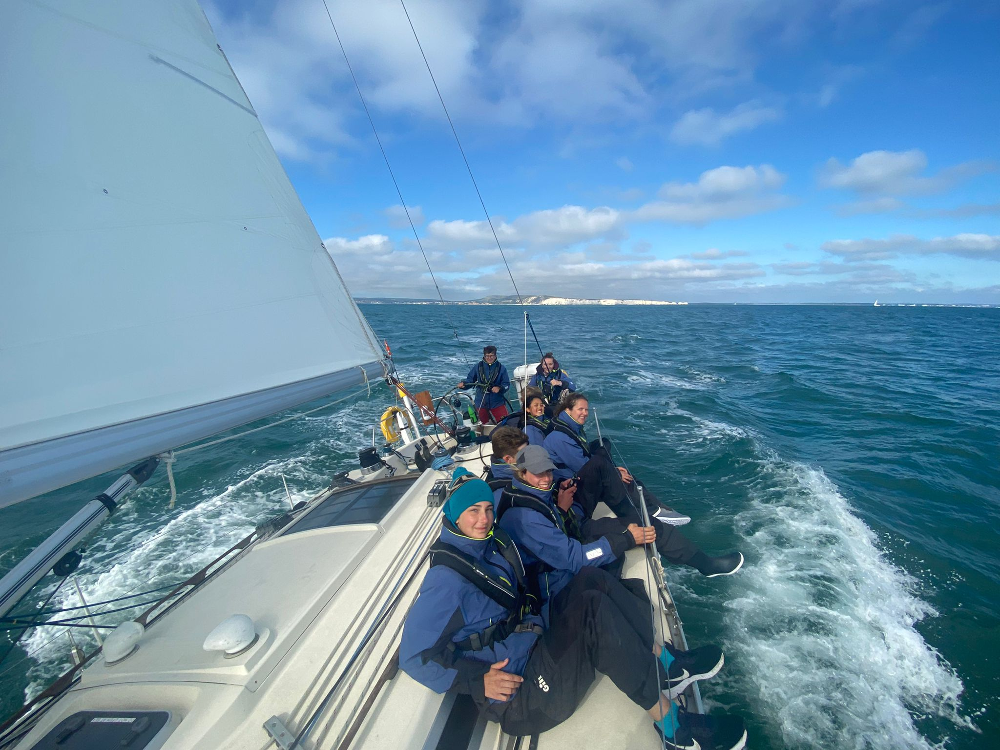

I have been sailing dinghies for around 8 years now, from my humble beginnings in a topper on the river Trent to teaching sailing with Nielson in Sardinia! I started out with Nottingham Sailing club, and was a slightly unenthusiastic junior for several years before my dad also got involved in sailing - resulting in him buying a Laser for the two of us. This introduced me to the world of more advanced sailing, and I started to get involved in racing at the club until going to university in 2022.
For 2 years I mostly dropped sailing except for the occasional summer excursion, before deciding to pick it back up again in 2024 when I got my Dinghy Instructor qualification and began teaching sailing, as well as participating in university sailing and team racing.
In summer 2025 I have gone to Italy to teach sailing on two separate occasions; firstly, on a short trip to Monte Argentario to work at Scuola Vela Argentario. Here, I learned to rig and sail a wider variety of boats, as well as learning about working and living in Italy. Then I returned to Italy, this time to work at Nielson's Baia dei Mori resort in Sardinia, where I am currently employed at the time of writing.
